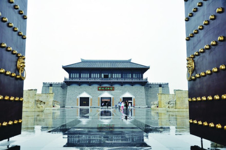

古代史

上古时期人类始祖女娲就在涉县古中皇山（娲皇宫）抟土造人、炼石补天。8000多年前，新石器早期的磁山先民就在这里繁衍生息，开启农业文明的新纪元。磁山文化早于仰韶文化1000年，是世界上粟、家鸡的最早发现地，将中国黄河流域种植粟的记录提前至距今一万年，填补了前仰韶文化的空白，修正了世界农业史对种植粟年代的认识。
邯郸的城邑，肇起于商殷。在商代早期建都于邢（今邢台），后迁都于殷（今安阳）的数百年间，邯郸均为畿辅之地。古本《竹书纪年》中，就有商末殷纣王在邯郸建“离宫别馆”的记载。至迟在殷纣王时期邯郸一名就已经出现，证实邯郸古城距今已有3100多年的建城历史。
邯郸之域在西周时属于卫国，春秋时为晋地，当时邯郸已是闻名遐迩的农业、手工业和商业比较发达的著名城邑。晋定公十二年（前500年），晋国正卿赵鞅（赵简子）已将邯郸纳入自己的势力范围，从此，邯郸便成了赵氏的世袭领地。战国时，赵敬侯元年（前386年）将赵都自中牟（今河南鹤壁西）迁徙到邯郸，邯郸作为赵国的都城，历经八代王侯，延续了158年的繁华。特别是一代英主赵武灵王，开改革之先河，实行胡服骑射的军事改革，富国强兵，国势大盛，雄踞战国七强之列，使赵国成为可与强秦抗衡的国家之一。
秦始皇十九年（前228年），秦军破邯郸，赵王迁降秦，邯郸属秦国，二十六年（前221年）秦灭赵国。次年，秦始皇统一六国，将全国分为三十六郡，邯郸是邯郸郡的首府。
汉高祖四年（前203年）立张耳为赵王，都城仍设邯郸。汉高祖九年（前198年），刘邦封其爱子如意为赵王，并重建邯郸宫城，富丽堂皇温明殿即建于此时。一直到西汉后期，邯郸城有“富冠海内，天下名都”之称，是除国都长安之外，与洛阳、临淄、成都、宛（南阳）齐享全国五大都会盛名，从战国到东汉，邯郸兴盛长达500年之久 。
东汉末叶，豪强并起，割据混战，邯郸罹难兵燹灾祸，开始走向衰落。建安十八年（213年），汉献帝册封曹操为魏国公，于邺城建都。在经济上实施屯田安民，大兴水利，营建魏都，开修道路。魏都的营建，以中轴为对称法则著称于世，并修建了铜雀、金凤、冰井三台。西晋左思所作《魏都赋》，正是描写邺城此时的繁华景象。邺城的兴起导致黄河以北的政治、经济、军事、文化中心南移，邯郸此时沦为一般的县城，隶属于魏郡。
三国魏黄初二年（221年）邯郸属广平郡，东晋后又改属魏郡。代之而勃兴的魏都邺城继而先后为后赵、冉魏、前燕、东魏、北齐的国都，前后历时364年，对于后世产生了极为深远的影响。《汉书》记载，“邯郸南据大河（古黄河），北有燕、代，楚虽胜秦，必不敢制赵，若不胜秦，必重赵，赵承秦、楚之弊，可以得志于天下。”可见邯郸地理位置之重要。
隋唐时，邯郸先后归属或复辖为洺州、磁州、武安郡和紫州，衰落而成蕞尔小县。曾盛极一时的邺城亦被焚为废墟，城毁人迁，一蹶不振。而邯郸东部的大名却在唐五代时悄然兴起。唐高祖武德四年（621年），作为魏州首府的大名已发展成为黄河以北较大区域的中心城市。唐乾元元年（758年）大名建为魏博镇，后称魏州大名府。
五代时，在大名设天雄军节度使。后唐同光元年（923年），李存勖在魏州（今大名）登上了皇帝宝座，史称后唐庄宗 [7]。
宋朝建立后，宋太宗将天下分为十五路，邯郸县属河北路磁州，而大名为河北路治所（省府）。宋庆历二年（1042年），建大名为陪都，称北京。大名至馆陶一带，是宋辽交兵的古战场，这里曾演绎过一幕幕威武雄壮的历史活剧。到金朝时，大名曾为藩国大齐的都城，南宋建炎四年（1130年），刘豫在此称帝。至元朝，这里仍为大名路总管府治，依然是邯郸东部的繁华重镇。
明太祖洪武元年，在全国设置十三省，邯郸县属北直隶省广平府。清朝因袭明制称直隶省，邯郸县仍属广平府管辖。明清时期邯郸一带的政治、经济中心是在广平府城（今永年老城）。